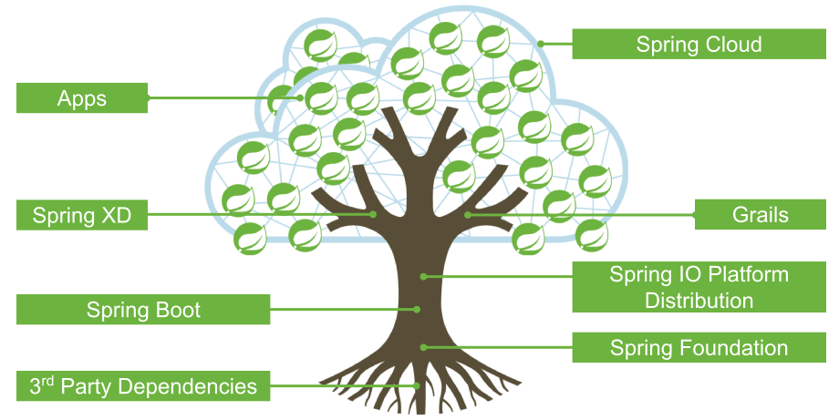
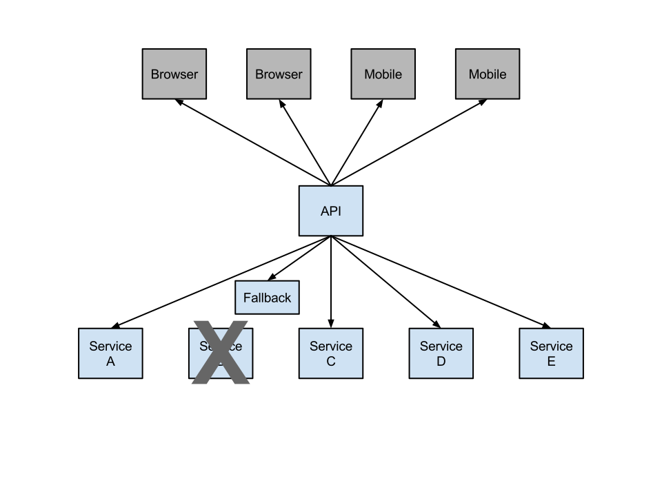

Spring Cloud
Das Microservice-Framework?
Motivation
- Microservices stellen neue Herausforderungen an den Entwickler:
- Koordination zwischen den Diensten
- Konfiguration
- Fehlerbehandlung
- Wie die neue Ansätze "einfach" und schnell anwenden?
- Wie vermeidet man boiler plate code?
- Deployment-Unterstützung für Cloud-Plattformen
Spring IO Plattform
Kommunikation
in einer Microservice Architektur

Spring Cloud Config Server
@Configuration
@EnableAutoConfiguration
@EnableConfigServer
public class ConfigServerApplication {
public static void main(String[] args) {
SpringApplication.run(ConfigServerApplication.class, args);
}
}
- Versionierte Konfiguration via GIT
- Rollbackfähig
- Konfiguration liegt außerhalb des Mircoservices
- Verschlüsselte Kommunikation und Speicherung
- Anbindung via JSON/REST
- Environment bezogenes Property-Handling
- Default environment application.properties
- <appname>-<envname>.yml oder *.properties
Spring Cloud Config Client
Application Properties:
@Component
@ConfigurationProperties
public class FooProperties {
private String foo;
}
- Autokonfig via Config Server
- POST to /refresh => erneuert und rebind aller Properties
- POST to /restart => neustart des Application-Context
- POST to /env => erneuert die Environment
- Atomic updates (bei einem refresh)
- Reset loggers bei geänderten Logging-Levels
Spring Cloud Config Client
DEMO
Spring Cloud Netflix
Service Discovery - Eureka
- Verwaltung für alle verfügbaren Service-Instanzen
- Dienste registrieren
- Fremde Dienste suchen
- Implementiert Client + Server auf Basis von Spring Boot
- Leichte Code-Seitige Anbindung von Eureka-Clients via @EnableEurekaClient
Spring Cloud Netflix
Circuit Breaker - Hystrix
|  |
Spring Cloud Netflix
Circuit Breaker - Hystrix
Eigenschaften:
- Behandlung von Latenz- /Verfügbarkeitsproblemen
- Isoliert die Dienste untereinander
- Verhindert kaskadierende Fehler
- Fallback Methoden
- Synchronous, Future, Observable Objekte
- Hystrix Dashboard
- Metric Aggregation
Spring Cloud Netflix
weitere Komponenten
Feign -
github.com/Netflix/feign
- Einbindung von Rest-Webservice per Interface
- Nutzung der Service soll so einfach wie normalen Java-Objekten sein
Spring Cloud Bus
- Lightweight Messaging Bus auf Basis von Spring Integration
- Anbindung via spring-amqp, rabbitmq oder http
- Nachricht wird nur an einen Node gesendet
- POST to /bus/env sends environment updates
- POST to /bus/refresh sends a refresh command
Starters
- Einfache Project-Config (maven-parent-pom)
- Aufbau analog zu Spring Boot
| spring-cloud-starter | spring-cloud-starter-hystrix |
| spring-cloud-starter-bus-amqp | spring-cloud-starter-hystrix-dashboard |
| spring-cloud-starter-cloudfoundry | spring-cloud-starter-turbine |
| spring-cloud-starter-eureka | spring-cloud-starter-zuul |
| spring-cloud-starter-eureka-server |
Weitere Komponenten
- Spring Cloud Security
- Unterstützt OAuth2
- Zentrales Token-Handling
- Spring Cloud CLI
- command line Unterstützung für Spring Cloud in Groovy
- Spring Cloud for Cloud Foundry
- Spring Cloud for Amazon Web Services
- Spring Cloud Connectors
- Einstiegspunkt für andere PaaS-Umgebungen
- Konfiguration via Java/XML (auf Spring Boot Basis)
Erfahrungen
| Bewertung | Kategorie |

|
Technologie
|

|
Einstieg
|
|
|
Dokumenation
|
Erfahrungen
| Bewertung | Kategorie |
|
|
Potenzial
|
Vielen Dank!

Source-Code:
git@github.com:toschneck/SC_demo.gitgit@github.com:toschneck/SC_shared_config.git